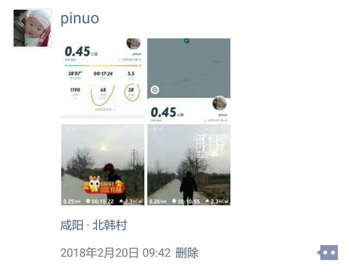
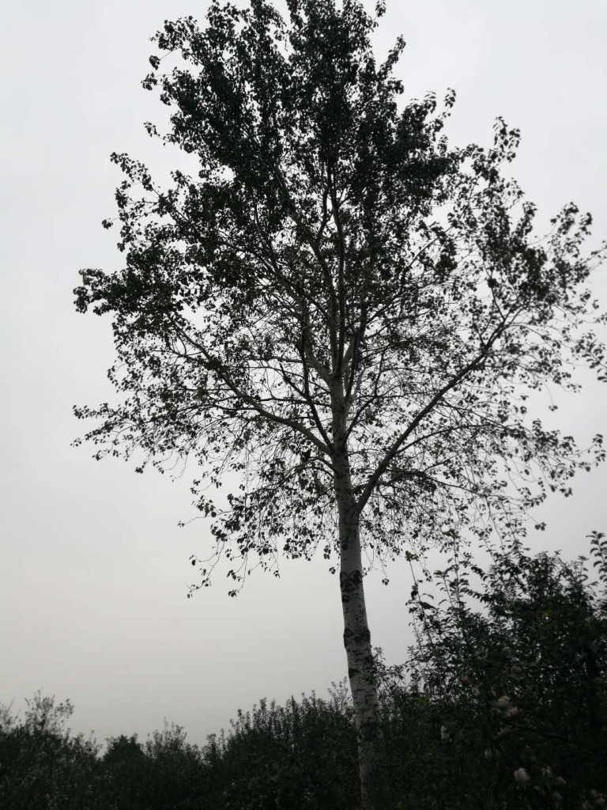

月圆满，人圆满，中秋别祖母
2018中秋，十多年了第一次在这天回到家里。不是为团聚，而是为离别。
昨晚九点四十上接到的电话，祖母走了。当时没有难过，可能是因为还没想好接受。前天刚视频过，老太太脸色上看人还胖了点，和我说了许久
然后，然后人就不行了。实在忍不住捶胸，吓坏了客厅的孩子。
知道当前这种距离格局下这是迟早的，但没想到会来的这么快这么突然。真到来时还是没法接受。
悔恨，懊恼，有点扭曲的心里撕裂的疼。
前天中午视频的时候有点漫不经心，可能是上班中午困了吧。老太太来来回回就是这么几句：娃多大了，上学好好去的吧，不要呵斥娃，有话好好说，娃还小。来回几遍，偶尔会来一遍过年把娃领回来看看啊！
后悔最近变懒了，事情多了，原来隔天视频最近一周才一次，最近这次两周才打的。
老太太说她吃了两个菜合煎饼，妈妈说吃了三个。老太太一直胃口都还可以，每天晚上还会喝碗鲜奶。
但明显今年越来越懒了，不爱动了。坐下就不愿意起来，喜欢坐在那儿犯困发呆。今年回家几次拉着出去散步，走不了一百米就说“咱回，不走了”。而且明显一次比一次懒了。过年的时候能硬拽着走几百米，五月份就只能哄着绕着村子转了，七月份那次真的是从凳子上拉起来都费劲，太懒了。

七月份一起走路时还给我回忆了她当年当妇女队长的事，对一个已经老年痴呆有点老糊涂的老太太来说真是不容易。
有人算过在外地一辈子和一生中和家人见面的次数总共有非常可怜的几十次。对我和祖母，我早知道是和零非常接近的一个个位数，今天这个数字终于走到了那个零。
回想下见面的次数真的能数的过来：
十五岁去外地念书，才开学二十天，老太太就跟着爸爸和弟弟就坐了一夜的火车到我的学校。宿舍的同学国庆节都回家了，就住在我的宿舍里，半夜老太太又起来给我盖被子，和在家一样。四年中专回过九次家，四年寒暑假外有一次是在洛阳重机厂车间实习，国庆回了趟家。
后来十九岁毕业了，要去东北铁路工地上修铁路，从渭南铁一局桥梁处的机关培训完中午赶回家，晚上就要坐火车去沈阳工地，老太太下午给缝了一个新的棉花褥子。带着就上了晚上往东北的火车。在工地上第一次收到妈妈的来信，想起祖母，这条新到工地上也算是铁路汉子哭的停不下来，记得工友刘哥他们还以为家里出了什么事，一直过来安慰我。
再后来从工地回来，回到离家近的西安，干点不像样的工作挣点小钱，自个儿再去看点书学点东西，从修桥的转到了现在的所谓计算机行当，然后考研考到西工大。那几年虽然离家不远，但基本上也是三四个月半年回一次。家人管这个叫上进有事业心，老太太也跟着说好好学习不用惦记她，后来回想只想再多抽自己几个嘴巴子。
研究生毕业几个offer上选择时，留在西安还是去外地，最终还是被趋势的工作内容打动，选择了先出去工作两年再回西安。清楚记得和一个知心的师姐和他家大哥一起商量，在外地工作和老太太见面就不方便了，那会儿还没有微信，当时商量认为用电脑摄像头视频挺方便的，可以随时至少每天见到。但事实上两年后并没有回去，两年里也没有过一次视频过。反倒是回家的次数越来越少，停留的时间越来越短，和老人电话里的沟通也越来越机械，中午吃的什么，天气冷不冷这些。再后来老太太老年痴呆越来越糊涂了，连中午吃的什么都说开始瞎胡说了。
后来有了自己的家，老太太那就是一个老家，老家里的一个重要符号，但也只是个符号，有时会打开，有时候忙了就顾不上了，中间有几个过年都没有回去看她。每次从家回来会隔一天在中午吃饭后和老太太微信视频下，但后面忙起来懒起来就一周一次都不一定了。老太太还是重复那几句：娃多大了，上学好好去不？娃小不要呵斥娃，好好和娃说话。老太太后面还学会了一句“还有啥跟婆说不？没了挂了吧，回去歇着吧”，因为有时有点累或者懒我说话的音量和情绪让老太太也不自在，经常“你说啥”问个个不停，甚至答非所问得懒懒的说上一会儿。
老太太对孙子们的疼爱是出了名的。曾经有过一阵子小学上课搞两大晌，大家上学都是急急忙忙拿个馍装书包就走了，只有我家老太太很早起来做好孙子一人份稀饭，热腾腾的吃完才去，然后她再给家人做第二顿早饭。
小学初中时候每天中午吃完饭手里拿一个黄灿灿的灶塘里烤好的热腾腾又脆脆的干馍是小伙伴们最羡慕的，比起其他人的一处焦一处白的，手里这个黄干脆脆的东西老太太每天得花多少心思，多少感情在上面。
记得上小学还是初中时候有个邻居曾经开玩笑以后去外地念书上班把你奶奶带着，老太太就可以一直给你做饭了，老太太也不用整天在家里念叨孙子了。这是玩笑，却也是实情。从很小到长到成年，到现在为人父，还没有做好没有这个老太太的世界是什么样子。不是不够坚强，是真的没有习惯。
清楚记得初一第一次语文课，题目是那会儿很常见的《我的**》，很多人写《我的妈妈》或者《我的爸爸》，我的一篇《我的奶奶》被特别表扬了，不是这个从小就表现出理工男特质的小屁孩的文采能有多好，只是因为流水帐一样写下老太太的日常就足够感动那个姓史的语文老师。
从记事开始就和爷爷奶奶一起睡在老房子的土炕上，冬天里点火烧炕的，有时整个屋子都是烟熏的睁不开眼。到后来搬到这个新房子，每次回家也会睡奶奶的大炕上，大炕那头连着厨房的火塘，暖烘烘的，冬天里贴着腰特别舒服，踏实，去乏。当然不多的几次带着老婆孩子回家都会睡楼上的自己的房间。就在奶奶走前的一个月，西安出差周末回家了三天，还睡过奶奶的这个大坑。一般都是奶奶睡炕那头，我睡炕这头。经常半夜老太太又挪到大坑这头，给大孙子把被子角往上拽拽，尽管这个大孙子已经不是两三岁，而是近四十的孩子他爹。曾经非常想领着那个整天蹦哒停不下来的儿子来老祖母的大炕上感受一下，感受下开阔和暖烘烘大炕，感受下老祖母的开阔又有温度的爱，但终没来的及。想到这里，觉得对不起孩子，更对不起那个老太太。
这次回来，大炕还是同样的温度，但却空荡荡。老太太独自躺在前厅的玻璃柜子里，等待儿孙们送她到西边地里爷爷的身旁。妈妈说天渐变凉，奶奶走的前一天晚上刚从大炕上换下了夏天的薄床单，换上了秋冬的厚毛线床单。
晚上一个人去了老太太将要安息的地方。苹果园地头的这棵大白杨树下不远就是。通往这里家西边这条路是以前每次和老太太咕咚健走的地方。
一个人又走了遍队友一起走过的这段路，今天下着小雨静的吓人，一个人但一路走过来路边的核桃树、苹果树、空地的话题都在：“现在这杮子品种不行，没人要了；苹果现在太多了所以不值钱了；你看这家地里草多高，啥也没种，年轻娃都出去打工不种地了”
后来又领着姨奶奶在这条路上散步，奶奶的妹妹比奶奶小了十多岁，给我讲她们的母亲走的早，奶奶做为老大怎么照顾他们姊妹四个。后来她们成家后又挨个照看二姨奶奶的五个表叔叔，给做针线活，给做吃的养活他们。姨奶奶的外形和神态像极了奶奶，一起走回来就像之前领着奶奶一样，乱乱的心里有了些许慰藉。就像姨奶奶说的，奶奶用他的善良辛劳节俭养活了一大家的人，养活和影响了几辈人。
早上上楼，后院的核桃树上突然有一大群长尾的鸟飞过来，停下来，叽叽喳喳叫的很急，很快又都飞走了。在老太太眼里这棵核桃树上产的都是最宝贝的东西，每年收下来都在楼上一遍一遍的晾干，然后等孙子回来装成小袋子，塞到他的箱子里。但可恨的是，孙子有多孙子，一年一年的带去，发现去年的还没吃，已经放出虫子了。

今天家里人很多，过两天要按村里人的习俗有个仪式为老太太送行。人多说话声音很杂，但人群里总是冷不丁感觉到一个熟悉的声音，可能是一个大妈婶婶的声音和老太太很像，或者是我幻听了，一天一直在幻听。中午人少的时候，看看厨房、后院、大炕，总感觉她还在那里，揽柴火、烧锅，或者坐在炕边椅子上发呆。笤帚、水杯、椅子，家里的每个大小物件都是她的日常，总是感觉那个熟悉的身影又慢悠悠的走过来。
没什么精神，今天大多时间都是扎着脑袋坐在老太太常坐的小椅子上，总感觉有那种轻轻的鞋底在地上塔拉的声音在慢慢走近，然后有人站在前面，笑眯眯的，手里拿着个小吃的。
老太太自己不太吃饭以外的东西，但给我们很上心。记得之前家里前厅开着小卖部，夏天放假回家，老太太总隔会儿从冰柜里取出个雪糕，“尝尝，今儿很多娃买这种”。遗憾的是我对这些零食也一直不感兴趣，好像没吃过那些雪糕，老太太总是扫兴的自己又放回去了。再后来老太太就开始糊涂了，什么东西多少钱自己乱说开了，收的钱放那儿了自己也说不清了。然后小卖部就关门了。
每次回家带给她的吃的只有当时打开她才吃，自己从来想不起吃，其实是舍不得变成的一种习惯。今天老太太房间的桌子上，上个月西安出差回家买的那些吃的，几样还没开包装，有几样还是我那天打开两人分着吃剩下的。当时在前厅，吹着过道凉风，分着吃各种干果、水果的感觉和那次一百米的咕咚健步走是最后一次印象深刻的团队运动，遗憾的是，老太太吃几个就说“你吃你吃，婆不吃了”。
老太太太爱操心，操小家的心，操大家的心，直到湖涂了有些原来操心的事想不起来了，才慢慢消停了。但仍然每天晚上会检查家里大门有没有关好，检查了又忘了，有时回好几遍。祖母走的昨晚，就是自己跑到前屋检查了两遍大门后回去，睡觉前又跑出来，突然发病摔倒就再也没有醒过来。
老太太走的太急，一家人到现在还不能接受。大家族里一个上年纪的四婶专门过来安慰妈妈：“这都是一辈子积德积来的福份，八十八岁高龄，不影响吃喝，没躺炕上或医院受一天的罪，就这样安静利索的走了。自己不受罪，也不连累子女们。老太太临到最后都是不给人添麻烦。一辈子都是这样，只给人帮忙，从来不给人添麻烦。你看走的这个日子还是八月十五娃放假，都不让孙子们麻烦请假。”。四婶年龄比奶奶小不了几岁，说的是对的。以前这些老太太们的这些有点迷信的道理是不爱听的，但这回是听进去了。老太太真的是这个时候也不想给儿孙们添麻烦，连百日祭的日子都是后面的元旦假期了。
说德高望重是在整个村里人们对她的评价。后辈的眼里，祖母生活中传递给我们的的品质更值得铭记。勤俭、正直、善良是邻里们对老太太的评价，老太太唱给我们说的是行善不做恶。从来不做亏人的事情。对亲人，邻居，或者陌生人。以前门口要饭的到这家门口，都比较喜欢找这个老太太。
昨晚在杭州家里从接到电话到四点多赶第一班飞机，基本没睡。今晚到从九点一觉睡到早上，睡的很踏实。心里不平静，一阵一阵的疼，还是那种手机备忘录纪录下思绪。

今天是中秋节，中秋月满，祖母也在这天圆满的走完了这一生。村里人说连倒下这天也是考虑了儿孙们这两天有假期。因为都说她一辈子只为亲人操心，唯独自己总是凑合。老太太不知道自己的生日，中秋节对于全家人会有另外一种意义。
之前从来没有想过来世的说法，也第一次自己提起这个词。但此刻真的希望有来世，再当您的孙子，我真的没当够。您养我长大，我陪您健走。如果有来世，不孝孙子一定不会跑的离您这么远了。
和我的咕咚队友来个约定，每月的月圆的那天会是特别的一天，8800米，纪念我88岁的咕咚队友，让我静静地想您，流着汗，流着泪，我相信您会在我身边一起跟着我慢慢的跑，我会一直跑，一直跑到我跑不动的那一天。
2018，农历八月十五前夜，月圆满，人圆满。八十八岁，送别我的祖母，送别我的咕咚队友。